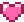
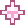
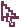

Good style starts
with what you have.
Rediscover your favorites. Find your colors.
Make getting dressed feel like you.



More favorites.
Your wardrobe
A palette that feels
like home.
Explore all 16 palettes ↗A starting point, never a rule. Wear what makes you feel good.
Made for your next look.
See your colors on you.
Compare your portrait with two palettes side by side. Try different colors and choose the combination you like most.
Use an unfiltered portrait in even daylight. Lighting, makeup, and screen settings affect the comparison. The experimental detector estimates a palette shortlist from a skin sample; results are not a professional color analysis.
JPEG, PNG, or WebP · up to 10 MB. Local comparison keeps your photo in this tab. AI analysis sends the resized photo and style context to OpenAI only when you choose it.
Add a portrait to begin.
AI style analysis
A vision model can suggest palettes and clothing ideas using your photo, saved preferences, wardrobe, and recent feedback.
Requires a connected backend and configured API access. Model suggestions are tentative, not a professional color diagnosis. Only save a palette if you want to use it.
Optional local pixel experiment
Find a starting palette
Click a makeup-free cheek or forehead area below. For keyboard use, move the sample point with the arrow keys and press Enter. Try several areas and compare results.
Experimental pixel-based estimate · No AI model or accuracy claims · Your natural skin depth is not used to assign a season.
Was it a good recommendation?
Review saved Buy / Maybe / Skip recommendations. Your feedback helps us measure what works for you.
Find your kind of color.
Four seasonal families. Sixteen ways to explore warmth, depth, softness, and clarity. Discover a palette, then try it in your wardrobe.
Our selected 16-palette framework is a starting point, not a diagnosis. Names vary across color-analysis systems. Skin depth and hair color alone do not determine your season. Swatches are illustrative screen colors.
Explore the 16-season color analysis guide ↗. Its subtype naming differs from the framework used here.